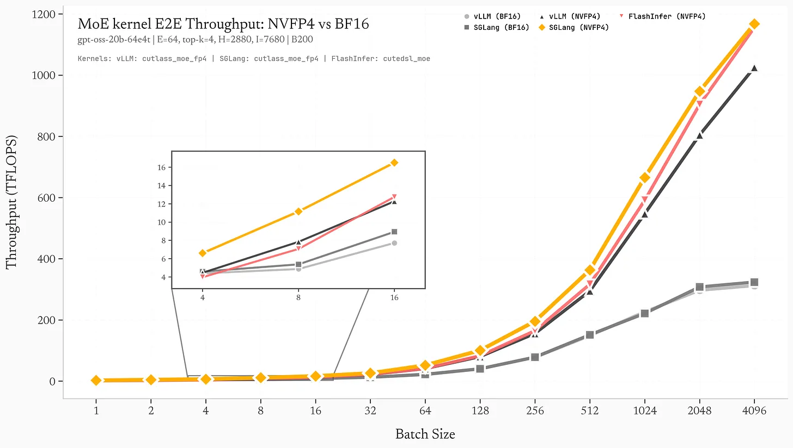
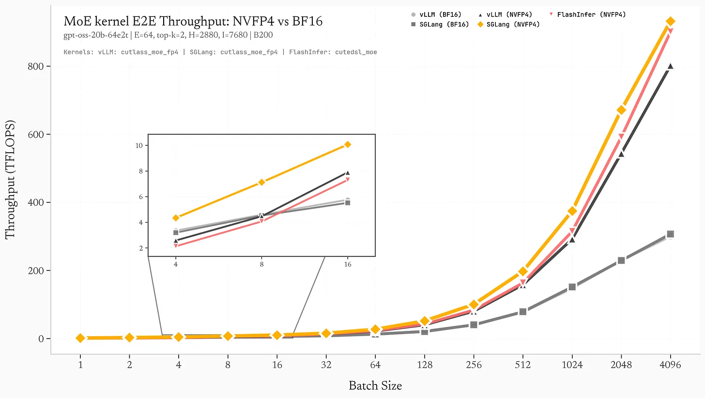
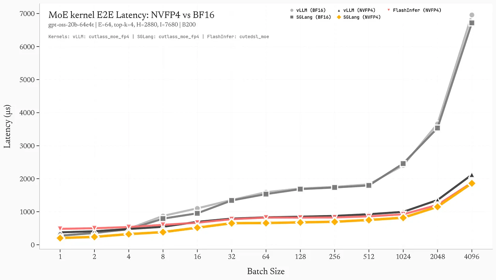
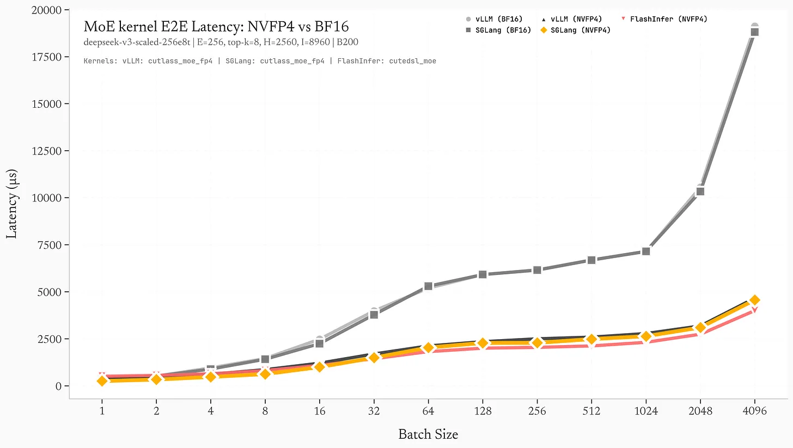
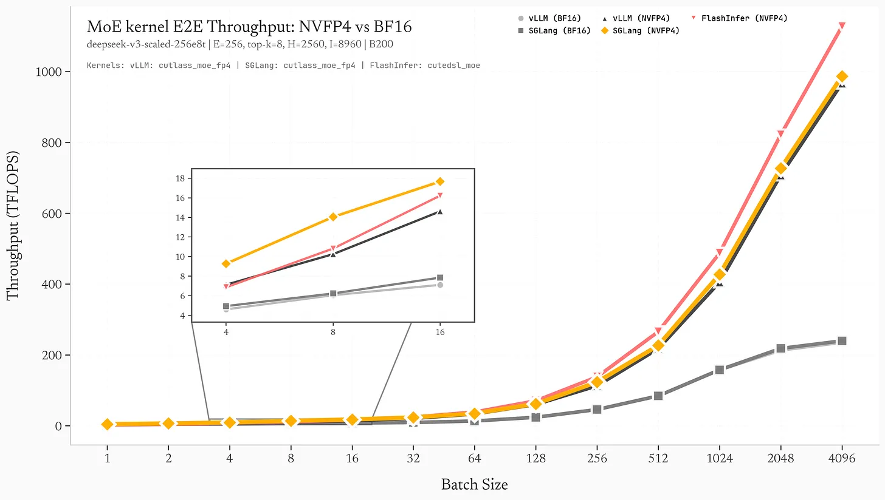

블로그 전재 번역 원문: https://substack.com/inbox/post/183346100?triedRedirect=true , 지식 학습 용도로만 사용하며, 침해가 있으면 삭제하겠습니다.
142 TFLOPS 차이: 왜 Blackwell에서 FP4 MoE operator engineering이 중요한가¶
kernel fusion, Blackwell 대상 최적화, 그리고 expert-aware 계산으로 작은 batch 추론에서 vLLM 대비 1.84배 가속을 얻는 방법
저자: advpropx(X)
서론¶
NVIDIA가 Blackwell의 native FP4 지원을 발표했을 때 약속은 매우 분명했다. 2배의 메모리 대역폭 절감과 대형 모델 추론 처리량의 뚜렷한 향상이다. 하지만 하드웨어 능력은 이야기의 절반일 뿐이고, 나머지 절반은 kernel engineering에서 온다.
나는 Blackwell B200(sm_100a) GPU 한 장에서 세 가지 대표 MoE(Mixture of Experts) backend인 vLLM, SGLang, FlashInfer CuteDSL을 benchmark했다. 테스트 모델은 GPT-OSS-20B이며, 각 layer에 32개 expert, top-4 routing, FP4 quantization을 사용했다. 같은 hardware, 같은 model structure에서 kernel 구현만 달랐다.
결과는 다음과 같다.
- SGLang: peak throughput 1168 TFLOPS
- vLLM: peak throughput 1026 TFLOPS
- FlashInfer CuteDSL: peak throughput 1156 TFLOPS
이는 SGLang과 vLLM 사이에 142 TFLOPS의 차이가 있음을 뜻한다. batch size = 1, 즉 interactive inference에서 가장 흔한 시나리오에서는 SGLang이 1.84배 빠르다.
이것은 distributed training도 아니고 multi-node inference 비교도 아니다. single-card inference에서 벌어지는 grouped GEMM kernel 경쟁이다. 차이는 주로 세 가지 핵심 최적화에서 나온다.
- Kernel fusion: global memory 왕복 3회에서 1회로 감소
- Blackwell 대상 CUTLASS schedule: native FP4 warp specialization
- Adaptive grid sizing: 작은 batch에서 SM occupancy 극대화
먼저 데이터를 보고, 이어서 이 kernel들이 정확히 어디에서 달라지는지 풀어 보겠다.
Benchmark: Blackwell B200 위의 GPT-OSS-20B¶
모델 설정¶
Architecture: GPT-OSS-20B
Experts: 32 total, top-4 routing
Hidden size: 2880
Intermediate size: 7680 (per expert)
Quantization: NVFP4 (4-bit floating point, E2M1 format)
Hardware: NVIDIA Blackwell B200 (sm_100a)
Peak Throughput(Batch Size = 4096)¶
그림 1: batch size별 effective TFLOPS. SGLang은 항상 앞서며, 작은 batch에서 이점이 더 뚜렷하다.


Latency Breakdown(Batch Size = 128)¶
그림 2: batch size = 128, 즉 decode의 “sweet spot” 구간에서 layer별 latency breakdown.

batch = 128에서 1000개 token을 생성하면 다음과 같다.
-
vLLM: 20.3초 -
SGLang: 16.2초
SGLang은 4.1초를 절약한다. 약 20% 빠르다.
작은 batch의 이점¶
정말 흥미로운 부분은 batch가 작을수록 성능 격차가 커진다는 점이다.
이는 매우 중요하다. interactive inference, 예를 들어 chatbot, code completion, agent 등은 보통 batch size 1-16에서 실행된다. 이 구간에서 SGLang의 1.34배-1.84배 이점은 곧바로 사용자 경험으로 이어진다.
Kernel 발견 #1: fusion으로 memory bottleneck 제거¶
vLLM의 직렬 구현(7회 kernel launch)¶
vLLM의 MoE forward는 7개의 독립 CUDA kernel을 launch한다.
출처: vllm/model_executor/layers/fused_moe/cutlass_moe.py:671-712
# 1. Reorder tokens by expert assignment
rep_a_fp4 = ops.shuffle_rows(a_fp4, a_map, (m * topk, k))
rep_a_blockscale = ops.shuffle_rows(a_blockscale, a_map, (m * topk, k // 16))
# 2. Quantize activations to FP4
a_fp4, a_blockscale = ops.scaled_fp4_experts_quant(a, a1_gscale, ...)
# 3. First GEMM: gate_up projection
c1 = ops.cutlass_fp4_moe_mm(rep_a_fp4, w1_fp4, rep_a_blockscale, w1_blockscale, ...)
# 4. SiLU activation
intermediate = torch.empty((m * topk, n), device=device, dtype=out_dtype)
torch.ops._C.silu_and_mul(c1, intermediate)
# 5. Quantize intermediate activations
int_fp4, int_blockscale = ops.scaled_fp4_experts_quant(intermediate, a2_gscale, ...)
# 6. Second GEMM: down projection
c2 = ops.cutlass_fp4_moe_mm(int_fp4, w2_fp4, int_blockscale, w2_blockscale, ...)
# 7. Reorder output back to original token order
output = ops.shuffle_rows(c2, c_map, (m, k))
대가는 무엇인가?
- 7회 kernel launch, 매번 약
~5-10μs의 추가 overhead - 7회 global memory 왕복
- kernel 사이 6곳의 synchronization point
rep_a_fp4,c1,intermediate,int_fp4,c2등의 intermediate buffer 할당
batch size = 4에서는 kernel launch overhead만으로도 전체 latency의 10%-20%를 차지한다.
SGLang의 fused reduction kernel¶
SGLang은 “첫 번째 shuffle + 마지막 shuffle + 최종 reduction”을 하나의 kernel에 fuse한다.
출처: sglang/sgl-kernel/csrc/moe/prepare_moe_input.cu:258-321
template <typename T, typename scalar_t>
__global__ void apply_shuffle_mul_sum_kernel(
const T* __restrict__ input, // [m*topk, k]
const int* __restrict__ permutation, // [m*topk] mapping
const scalar_t* __restrict__ weights, // [m, topk] routing weights
T* __restrict__ output, // [m, k]
int m, int k, int topk
) {
// 128-bit vectorized loads
constexpr uint32_t vec_size = 16 / sizeof(scalar_t);
using vec_t = flashinfer::vec_t<T, vec_size>;
const int token_idx = blockIdx.x;
const int feature_idx = threadIdx.x * vec_size;
vec_t sum;
sum.fill(scalar_t(0));
// Iterate over top-k experts for this token
for (int k_idx = 0; k_idx < topk; k_idx++) {
const int src_idx = permutation[token_idx * topk + k_idx];
const scalar_t weight = weights[token_idx * topk + k_idx];
// Vectorized load from expert output
vec_t expert_output;
expert_output.load(input + src_idx * k + feature_idx);
// Multiply by routing weight and accumulate
#pragma unroll
for (int i = 0; i < vec_size; i++) {
sum[i] += expert_output[i] * weight;
}
}
// Vectorized store to output
sum.store(output + token_idx * k + feature_idx);
}
하나의 kernel에서 세 가지 일을 끝낸다.
- token reorder(
permutationlookup) - routing weight multiply
TopKreduction, 즉 선택된 experts 합산
이점은 다음과 같다.
- activation 관련 memory bandwidth 요구량이 약 3배 감소(global memory pass 1회)
- 더 좋은 cache locality(
L1에서permutation과weights재사용) - intermediate buffer 할당 2개 감소
- kernel 수가 7개에서 5개로 감소(
7 → 5)
128-bit vectorization은 thread 하나가 load 한 번에 bfloat16 원소 8개를 처리한다는 뜻이다. 작은 batch에서도 memory bandwidth를 더 충분히 끌어낼 수 있다.
FlashInfer CuteDSL: 다른 trade-off¶
FlashInfer는 token-first가 아니라 expert-first라는 다른 layout을 쓴다.
출처: 내 benchmark script
def prepare_flashinfer_input_vectorized(hidden_states, topk_ids, topk_weights, num_experts, topk, device, dtype):
"""Prepare input in expert-first format for FlashInfer CuteDSL.
Reshapes from [batch, hidden] to [num_experts, max_tokens_per_expert, hidden]
"""
batch_size, hidden_dim = hidden_states.shape
# Count tokens per expert using vectorized bincount
flat_ids = topk_ids.flatten()
expert_counts = torch.bincount(flat_ids.to(torch.int64), minlength=num_experts).to(torch.int32)
max_tokens_per_expert = expert_counts.max().item()
# Sort tokens by expert ID
sorted_indices = torch.argsort(flat_ids)
sorted_hidden = weighted_hidden[sorted_indices]
sorted_expert_ids = flat_ids[sorted_indices]
# Create expert-first tensor [num_experts, max_tokens, hidden_dim]
expert_hidden = torch.zeros((num_experts, max_tokens_per_expert, hidden_dim), device=device, dtype=dtype)
# Fill using advanced indexing
expert_offsets = torch.zeros(num_experts + 1, dtype=torch.int64, device=device)
expert_offsets[1:] = expert_counts.cumsum(0)
token_positions = torch.arange(len(sorted_expert_ids), device=device)
position_in_expert = token_positions - expert_offsets[sorted_expert_ids]
expert_hidden[sorted_expert_ids, position_in_expert] = sorted_hidden
return expert_hidden, expert_counts
trade-off는 이렇다. FlashInfer는 preprocessing이 더 무겁다. sorting, scatter 등이 필요하다. 하지만 expert-first layout은 “expert dimension 기준 batch화”를 더 잘 만든다. 작은 batch(BS=1-16)에서는 이 overhead가 성능을 뚜렷하게 끌어내리지만, 큰 batch에서는 layout 이점이 preprocessing 비용을 상쇄하기 쉽기 때문에 전체 성능이 SGLang에 가까워질 수 있다.
Kernel 발견 #2: Blackwell 대상 CUTLASS 특화 schedule¶
SGLang의 native FP4 schedule¶
SGLang은 sm_100a의 grouped FP4 GEMM을 위해 특별히 설계된, Blackwell 최적화 CUTLASS schedule을 사용한다.
출처: sglang/sgl-kernel/csrc/moe/nvfp4_blockwise_moe.cu:196-201
// SM100/Blackwell B200 configuration
using ThreadBlockShape = Shape<_128, _128, _128>;
using ClusterShape = Shape<_1, _1, _1>;
using AlignmentA = 32;
using AlignmentB = 32;
using KernelSchedule = cutlass::gemm::KernelPtrArrayTmaWarpSpecialized1SmNvf4Sm100;
KernelPtrArrayTmaWarpSpecialized1SmNvf4Sm100이 주는 이점은 다음과 같다.
- FP4 대상 warp specialization: FP4 load,
FP16/BF16으로 dequantize,FP32accumulation을 각각 전용 warp 역할에 배정해 범용 “load-convert-compute” 경로를 피한다. - TMA(Tensor Memory Accelerator) 통합: asynchronous bulk tensor load로
L1 cache를 우회해 shared memory에 직접 데이터를 공급한다. 이를 위해 엄격한 128-byte alignment가 필요하다. - 1 SM grouping: “expert 하나가 SM 하나를 차지”하는 대신 SM 하나가 여러 expert를 처리한다. expert 규모가 고르지 않은 MoE workload에 더 우호적이다.
- native NvFP4 지원: software emulation이 아니라 Blackwell hardware FP4 instruction을 사용한다.
TMA alignment 강제¶
출처: sglang/sgl-kernel/csrc/moe/nvfp4_blockwise_moe.cu:89-103
// Strict TMA alignment enforcement
assert((reinterpret_cast<uintptr_t>(a_scales_offsets[expert_id]) % 128) == 0
&& "TMA requires 128-byte alignment");
*layout_sfa_ptr = ScaleConfig::tile_atom_to_shape_SFA(
cute::make_shape(static_cast<int>(m), static_cast<int>(n),
static_cast<int>(k), 1)
);
SGLang은 blockscale offsets를 128-token boundary로 pad해서 TMA alignment를 보장한다.
출처: sglang/sgl-kernel/csrc/moe/prepare_moe_input.cu:55-73
// Round to 128-token boundaries for TMA
blockscale_offsets[expert_id + 1] =
(expert_offsets[expert_id + 1] + 127) / 128 * 128;
이 방식은 약간의 GPU memory를 낭비한다. expert 하나당 최대 float 127개가 더 들어갈 수 있다. 하지만 unaligned access로 인한 TMA stall을 막을 수 있다.
vLLM의 범용 CUTLASS 설정¶
vLLM은 더 범용적인 CUTLASS 3.x schedule을 사용한다. Ampere/Hopper/Blackwell을 모두 지원하지만, Blackwell에 맞춘 특화 최적화는 부족하다.
출처: vllm/csrc/quantization/fp4/nvfp4_blockwise_moe_kernel.cu:93-101
// Generic TMA alignment checks (no padding)
assert(reinterpret_cast<uintptr_t>(a_scales) % 128 == 0);
assert(reinterpret_cast<uintptr_t>(b_scales) % 128 == 0);
vLLM은 alignment를 검사하지만 padding으로 “강제 정렬”하지는 않는다. 따라서 token 수가 자연스럽게 alignment 조건을 만족하지 못하면 TMA가 더 느린 경로로 fallback할 수 있다.
영향¶
영향은 다음과 같다.
- 더 높은 effective memory bandwidth(TMA vs
L1 cache경로) - 더 높은 warp utilization(특화 역할 vs 범용 경로)
- 더 적은 register spill(
sm_100a대상 tuning)
Kernel 발견 #3: 작은 batch 대상 adaptive grid sizing¶
작은 batch에서의 occupancy 문제¶
GPU kernel이 peak performance에 가까워지려면 GPU를 “먹여 살릴” 충분한 parallelism이 필요하다. 142개 SM을 가진 B200을 예로 들면, 모든 SM을 바쁘게 만들려면 최소 142개 thread block이 필요하다.
하지만 MoE는 batch size = 1에서 전형적인 문제를 만난다.
64 experts × 4 topk = 256 tokens를 처리해야 한다.- thread block 하나가
128 tokens를 처리하면2 blocks만 launch된다. - 결과적으로 약 98.6%의 SM이 idle 상태가 된다.
표준 CUTLASS launch heuristic은 이런 극단적인 소규모 상황에 잘 맞지 않는다.
SGLang의 dynamic block sizing¶
parallelism이 부족할 때 SGLang은 adaptive strategy를 사용한다. 더 작은 block으로 더 큰 grid를 만들어 전체 parallelism을 높인다.
출처: sglang/sgl-kernel/csrc/gemm/nvfp4_expert_quant.cu:456-477
// Adaptive kernel launch configuration
int const workSizePerRow = k / ELTS_PER_THREAD; // 8 FP4 elements per thread
int const totalWorkSize = m_topk * workSizePerRow;
dim3 block(std::min(workSizePerRow, 512));
int const numBlocksPerSM = 2048 / block.x;
dim3 grid(std::min(
static_cast<int>((totalWorkSize + block.x - 1) / block.x),
multiProcessorCount * numBlocksPerSM
));
// Dynamic adjustment: halve block size, double grid size
while (grid.x <= multiProcessorCount && block.x > 64) {
grid.x *= 2;
block.x = (block.x + 1) / 2;
}
batch size = 1을 예로 들면 초기 설정은 다음과 같다.
m_topk = 256 tokens (1 batch × 64 experts × 4 topk)
k = 2880 (hidden size)
workSizePerRow = 2880 / 8 = 360
totalWorkSize = 256 × 360 = 92,160
block.x = min(360, 512) = 360
grid.x = min(92160 / 360, 142 × 5) = min(256, 710) = 256
adaptive adjustment 이후:
작업량이 더 작으면 위 while loop가 작동한다.
결과적으로 block size와 grid size 사이의 균형을 찾아 SM occupancy를 가능한 한 극대화한다.
vLLM의 고정 heuristic¶
vLLM은 CUTLASS 기본 launch heuristic에 더 많이 의존한다. 이 heuristic은 큰 matrix 규모 최적화에 더 가깝다. 작은 batch에서는 다음 문제가 생긴다.
- 더 큰 block(
256-512threads) - 더 적은 block 수(utilization 부족)
- 더 낮은 occupancy
실측상 BS=1-4에서 SGLang의 adaptive sizing은 최대 1.84배 가속에 기여할 수 있다.
DeepSeek 관련: scale-out Expert Parallelism(EP)¶
DeepSeek-V3 architecture¶
DeepSeek-V3는 MoE를 더 극단적인 규모로 밀어붙인다.
- layer마다 256 experts
Top-8routing, 활성 expert 수가 약 2배hidden dim = 7168,intermediate = 18432, expert 하나의 계산량이 매우 큼
이 architecture의 설계 목표는 Expert Parallelism(EP)이다. expert를 여러 GPU/node로 나누고 all-to-all communication으로 token을 routing한다. 여기서는 DeepEP/EP의 communication overhead를 측정하지 않았다. 그것은 또 다른 주제다.
나는 single B200에 들어가는 축소 버전을 benchmark했다.


expert가 많아질수록 격차가 줄어드는 이유¶
experts 수가 256에 이르면 system의 자연 parallelism이 더 높아진다. launch heuristic이 이상적이지 않더라도 vLLM은 큰 batch에서 GPU를 더 쉽게 꽉 채울 수 있다. 이때 kernel fusion과 Blackwell 대상 최적화의 이점은 더 compute-bound한 구간에서 덜 두드러진다.
하지만 작은 batch에서는 SGLang의 adaptive grid sizing이 여전히 더 유리하다. expert가 많을수록 routing이 더 예측하기 어렵고 expert load imbalance가 더 커지는데, SGLang의 expert-aware quantization은 이런 상황을 더 잘 처리한다.
DeepEP: multi-node expert parallelism¶
진짜 DeepSeek-V3 규모, 즉 256 experts와 full dimension을 유지하려면 보통 node를 넘나드는 EP가 필요하다. SGLang은 DeepEP(DeepSeek Expert Parallelism)를 구현했고 핵심 흐름은 다음과 같다.
- All-to-All dispatch: token을 해당 expert를 가진 rank로 routing
- Local GEMM: 각 rank가 자신이 맡은 experts 계산
- All-to-All combine: 결과를 원래 token 순서로 다시 aggregate
출처: sglang/srt/layers/moe/token_dispatcher/deepep.py:398-457
def _dispatch_core(
self,
x: Union[torch.Tensor, Tuple[torch.Tensor, torch.Tensor]],
topk_ids: torch.Tensor,
topk_weights: torch.Tensor,
previous_event,
):
buffer = self._get_buffer()
# Compute dispatch layout (which tokens go to which rank)
(
num_tokens_per_rank,
num_tokens_per_rdma_rank,
num_tokens_per_expert,
is_token_in_rank,
previous_event,
) = buffer.get_dispatch_layout(
topk_ids,
self.num_experts,
previous_event=previous_event,
async_finish=self.async_finish,
allocate_on_comm_stream=previous_event is not None,
)
# All-to-all dispatch
(
recv_x,
recv_topk_ids,
recv_topk_weights,
num_recv_tokens_per_expert,
self.handle,
event,
) = buffer.dispatch(
x,
topk_idx=topk_ids,
topk_weights=topk_weights,
num_tokens_per_rank=num_tokens_per_rank,
num_tokens_per_rdma_rank=num_tokens_per_rdma_rank,
is_token_in_rank=is_token_in_rank,
num_tokens_per_expert=num_tokens_per_expert,
previous_event=previous_event,
async_finish=self.async_finish,
allocate_on_comm_stream=(previous_event is not None) and self.async_finish,
expert_alignment=128 if deep_gemm_wrapper.ENABLE_JIT_DEEPGEMM else 1,
config=DeepEPConfig.get_instance().normal_dispatch_config,
)
return (
recv_x,
recv_topk_ids,
recv_topk_weights,
num_recv_tokens_per_expert,
event,
)
핵심 세부 사항은 다음과 같다.
NCCL/RDMA로 low-latency all-to-all 구현- bandwidth 압력을 낮추기 위해 FP8 communication 지원(dispatch 전에 activation quantization)
- 두 가지 mode:
Normal(prefill)과Low-Latency(decode)
dispatch 이후 local GEMM 단계에도 앞에서 언급한 kernel 최적화(fusion, Blackwell schedule, adaptive sizing)가 그대로 적용된다. 따라서 single-card 1.25배-1.84배 가속은 multi-node parallelism과 추가로 겹쳐진다.
FlashInfer CuteDSL: 세 번째 선수¶
CuteDSL은 비교적 새로운 방향으로, MoE workload를 위한 template 기반 kernel generation에 초점을 둔다.
성능 비교(GPT-OSS-20B)¶
peak throughput(BS=4096)에서는 FlashInfer가 SGLang보다 약 1.0% 느리다(1156 vs 1168 TFLOPS). 하지만 작은 batch에서는 1.6배-2.4배 느려진다.
왜 FlashInfer는 작은 batch에서 불리한가¶
FlashInfer의 expert-first layout은 무거운 preprocessing이 필요하다.
bincount로 expert별 token 수 집계argsort로 expert 기준 token groupingscatter로 expert-first tensor 채우기(padding이 생길 수 있음)
batch size = 1이고 experts 수가 64이면 이 preprocessing overhead가 주요 bottleneck이 된다. batch size = 4096에서는 overhead가 분산되고, FlashInfer의 “expert별 batch화” 이점이 더 잘 드러난다.
FlashInfer의 강점: masked GEMM¶
FlashInfer는 masked GEMM을 지원한다. 각 expert의 출력을 fixed size로 pad하는 방식이다. 이 방식은 다음 이점을 준다.
- 더 나은 memory coalescing, 더 이상 irregular stride가 아님
- 더 단순한 kernel logic, variable-length batch 처리가 필요 없음
experts 수가 매우 클 때(256+) 이 방법은 token-first layout을 넘어설 수도 있다. 하지만 GPT-OSS-20B(64 experts)에서는 preprocessing 비용이 보통 이익보다 크다.
Memory bandwidth 분석¶
아래에서는 kernel fusion이 가져오는 memory bandwidth 절감을 수치화한다.
vLLM의 memory traffic¶
batch size = 128, hidden size = 2880, 64 experts, topk = 4를 예로 든다.
memory operation:
-
shuffle_rows(input):512 × 2880 × 2 = 2.95 MBread,2.95 MBwrite -
scaled_fp4_quant:2.95 MBread,1.47 MB(FP4) + 0.09 MB(scales)write -
cutlass_fp4_moe_mm(GEMM1):1.47 + 0.09 MB(activations) + 56 MB(weights)read,7.87 MB(intermediate)write -
silu_and_mul:7.87 MBread,3.94 MBwrite -
scaled_fp4_quant:3.94 MBread,1.97 MB + 0.12 MB(scales)write -
cutlass_fp4_moe_mm(GEMM2):1.97 + 0.12 MB + 28 MB(weights)read,2.95 MBwrite -
shuffle_rows(output):2.95 MBread,2.95 MBwrite
총 memory traffic: 2×(2.95) + 2×(2.95) + 7.87 + 3.94 + 2.95 = 26.5 MB
weight read는 제외했다. weight read 비중은 크지만 두 구현이 비슷하므로 여기서는 먼저 빼고 본다.
SGLang(fusion 이후)의 memory traffic¶
SGLang은 단계 1과 7을 apply_shuffle_mul_sum으로 fuse한다.
-
scaled_fp4_quant:2.95 MBread,1.47 MB + 0.09 MBwrite -
cutlass_fp4_moe_mm(GEMM1):1.47 + 0.09 MB + 56 MBread,7.87 MBwrite -
silu_and_mul:7.87 MBread,3.94 MBwrite -
scaled_fp4_quant:3.94 MBread,1.97 MB + 0.12 MBwrite -
cutlass_fp4_moe_mm(GEMM2):1.97 + 0.12 MB + 28 MBread,2.95 MBwrite -
apply_shuffle_mul_sum:2.95 MB(c2) + 0.01 MB(c_map, topk_weights)read,2.95 MBwrite
총 memory traffic: 2.95 + 7.87 + 3.94 + 2.95 + 2.95 + 0.01 = 20.7 MB
절감 비율은 (26.5 - 20.7) / 26.5 = 21.9%이며, activation 관련 memory traffic이 21.9% 감소한다.
B200의 memory bandwidth(8 TB/s)로 추정하면:
vLLM:26.5 MB / 8000 GB/s = 0.0033 msSGLang:20.7 MB / 8000 GB/s = 0.0026 ms- 절감: layer당 약
0.0007 ms
24 layers, 1000회 forward(1000 token 생성)를 기준으로 하면:
- 총 절감:
0.0007 × 24 × 1000 = 16.8 ms
이는 꽤 보수적인 추정이다. cache effect와 kernel launch overhead 감소까지 고려하면 실제 이득은 보통 더 크다.
왜 kernel engineering의 이득은 “겹쳐서 증폭”되는가¶
이 최적화들은 보기에는 “incremental improvement”처럼 보일 수 있다. 142 TFLOPS 차이, 1000 token당 4.1초 절감, activation memory traffic 21.9% 감소처럼 말이다. 하지만 여러 dimension에서 겹쳐진다.
1) Layer 수¶
현대 대형 모델은 보통 24-80 layers를 가진다. 각 layer마다 MoE forward를 한 번씩 실행하므로 single-layer 절감이 24-80배로 확대된다.
2) Token 수¶
단일 request는 흔히 수백-수천 token을 생성한다. chat, code generation, agent workflow는 종종 10K token을 넘는다. 24 layers 기준으로:
vLLM:0.847 ms/layer × 24 layers × 10,000 tokens = 203 secondsSGLang:0.676 ms/layer × 24 layers × 10,000 tokens = 162 seconds(128requests per batch 기준)- 절감: request당 약
320 ms
중간 규모 inference workload, 예를 들어 10K req/day에서는 이런 kernel 최적화가 1년 기준으로 상당한 비용을 줄일 수 있다.
inference framework 개발자를 위한 제안¶
Blackwell GPU에서 높은 성능을 얻고 싶은 inference framework 개발자라면 다음이 가장 중요하다.
1) 더 과감하게 fuse하기¶
vLLM의 7-kernel 분리는 debug와 modularity 관점에서는 합리적이다. 하지만 production용 kernel은 가능한 한 fuse해야 한다.
shuffle + reduce(SGLang의apply_shuffle_mul_sum처럼)quantization + GEMM(별도 quant kernel 회피)activation + quantization(예:SiLU와 후속 quantization fusion)
목표는 token-to-token latency를 3-4회 kernel launch(prepare, GEMM1, GEMM2, reduce)로 압축하는 것이다.
2) hardware-specific schedule 사용하기¶
범용 CUTLASS 설정에만 의존하지 말아야 한다. NVIDIA는 architecture별 optimized schedule을 제공한다.
- Ampere:
KernelTmaWarpSpecialized - Hopper:
KernelTmaWarpSpecializedPingpong - Blackwell:
KernelPtrArrayTmaWarpSpecialized1SmNvf4Sm100
목표 hardware에서 반드시 테스트해야 한다. Tensor Core 구성 차이 때문에 Hopper 대상 kernel이 Blackwell에서는 오히려 충분히 좋지 않을 수 있다.
3) adaptive launch heuristic¶
고정 grid/block strategy는 극단적인 batch에서 자주 실패한다. 다음을 구현하는 것이 좋다.
- small batch(
1-16):grid를 최대한 키우고block을 줄임 - large batch(
512+): 표준 CUTLASS heuristic 사용 - dynamic tuning: 첫 실행에서 profiling하고 configuration cache
SGLang의 while loop heuristic은 단순하지만 효과적이다. 더 복잡한 방법, 예를 들어 TVM식 auto-tuning은 추가 최적화 여지를 준다.
4) TMA alignment 강제¶
TMA를 쓴다면, 그리고 Blackwell에서는 실제로 써야 한다면, tensor를 128-byte alignment로 pad해야 한다. 성능 이득에 비해 추가 memory overhead는 무시할 만하다.
5) 작은 batch benchmark에 집중하기¶
대부분의 공개 benchmark는 batch size = 128-512를 본다. 하지만 interactive inference는 실제로 BS=1-16에서 동작한다. 목표가 chat, code completion, agent라면 작은 batch 최적화를 우선해야 한다.
결론¶
SGLang과 vLLM의 FP4 MoE inference에서 나타나는 142 TFLOPS 차이는 “CUDA magic”이나 “secret sauce”가 아니라 체계적인 kernel engineering이다.
- kernel fusion: activation memory traffic 21.9% 제거
- Blackwell 대상 CUTLASS schedule: native FP4와 TMA 가속 해방
- adaptive grid sizing: 작은 batch에서 SM occupancy 극대화
이 최적화는 layer 수, token 수, request 수에서 겹쳐 최종적으로 다음을 가져온다.
- batch size = 1(interactive inference): 1.84배 가속
- batch size = 128(decode sweet spot): 1.25배 가속
CuteDSL도 한 가지를 보여준다. expert-first layout은 큰 batch에서 가까이 따라가거나 경쟁할 수 있지만, 작은 batch에서는 preprocessing overhead에 발목을 잡힌다.
핵심 결론은 이렇다. hardware의 FP4 지원은 필요조건이지만 충분조건은 아니다. “카드만 바꾸면 inference가 자연스럽게 빨라진다”고 기대할 수 없다. 성능을 진짜로 풀어내려면 kernel이 Blackwell의 고유 특성, 즉 TMA, warp specialization, native FP4 instruction 등을 충분히 활용해야 한다.
모델이 256+ experts로 가고 multi-node EP가 일반화될수록 이 최적화들은 더 중요해질 것이다. 오늘 kernel engineering에 투자하는 framework가 내일의 성능 상한을 정의하게 된다.
부록: 전체 benchmark data¶
Hardware¶
Software¶
Benchmark 방법¶
-
Warmup: 20 iterations
-
Measurement: 200 iterations
-
Metrics: average latency(
μs/ms), standard deviation,TFLOPS -
TFLOPS계산 방식:
flops = batch_size * topk * (
2 * hidden_dim * inter_dim * 2 + # up-projection (gate + up)
2 * inter_dim * hidden_dim # down-projection
)
tflops = flops * 1e-12 / (mean_ms * 1e-3)
-
Synchronization: each iteration 뒤
torch.cuda.synchronize() -
GPU memory: configuration 사이에 GPU cache cleanup
참고 링크¶
SGLang¶
-
GitHub:
sgl-project/sglang(https://github.com/sgl-project/sglang) -
fused reduction kernel:
prepare_moe_input.cu -
Blackwell FP4 GEMM:
nvfp4_blockwise_moe.cu -
expert quantization:
nvfp4_expert_quant.cu -
DeepEP integration:
deepep.py -
CuteDSL(cutedsl moe는sglangproject의 일부)
vLLM¶
-
GitHub:
vllm-project/vllm(https://github.com/vllm-project/vllm) -
FP4 MoE layer:
cutlass_moe.py -
CUTLASS kernel:
nvfp4_blockwise_moe_kernel.cu
FlashInfer¶
- GitHub:
flashinfer-ai/flashinfer(https://github.com/flashinfer-ai/flashinfer)
NVIDIA¶
-
CUTLASS:
NVIDIA/cutlass(https://github.com/NVIDIA/cutlass) -
Blackwell architecture: NVIDIA Blackwell White Paper(https://resources.nvidia.com/en-us-blackwell-architecture)
-
TMA docs: CUDA Programming Guide - Tensor Memory Accelerator(https://docs.nvidia.com/cuda/cuda-c-programming-guide/index.html#tensor-memory-accelerator)